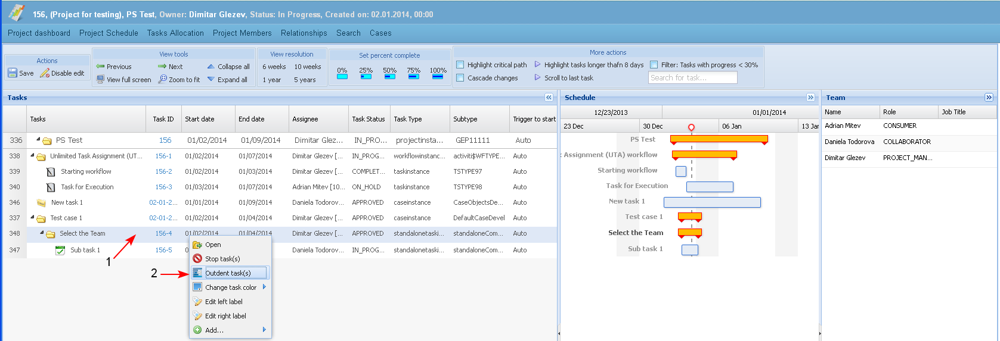
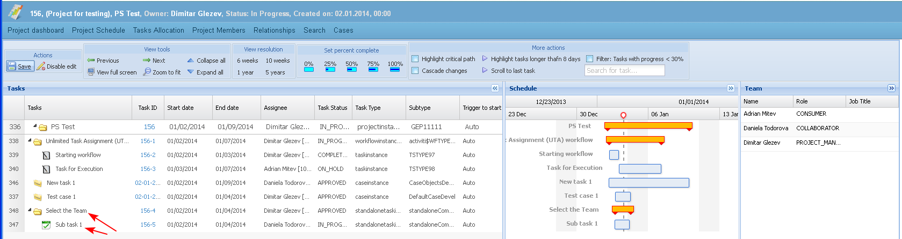

The user is able to change a sub-task outline in the project schedule.
Preconditions
No task could be out dented to the level of "Project" type task.
- The user selects a task (1) and the button "Outdent task" (2).

- The selected task is outdented one level.
- When the selected task is a leaf task and there is a task (tasks) right after it, which is indented compared to it then it is transformed to summary task.
- When the selected task is already a summary task, then when outdented it is moved together with its summary tasks.

- When a task is in status different than "Submitted" then the "Outdent" action on the task in the PS changes the relationship of type "Part of" of that task.
Example:
- Task1 is Part of Task 2.
- Task1 is outdented in the PS and becomes a child of Case A.
- A new relationship is created: Task1 is part of Case A and the existing relationship, between the two tasks is deleted.